Get Started
Lomu Centrs
Lai lietotu Latvian Base Localization, nav nepieciešami specifiski lomu centri, jo funkcionalitāte ir pieejama izmantojot Meklēšana pogu, un izdruku pogas ir iestrādātas funkciju lentē zem tabulas DARBĪBAS.
Konfigurācijas pakotnes importēšana
Latvian Base Localization lietošanai nepieciešamie pamata uzstādījumi tiek izveidoti, attiecinot konfigurācijas pakotni LV.LVI.STANDARD.
Klikšķiniet uz pogas Meklēt lapu vai atskaiti...

Ierakstiet Konfigurācijas pakotnes un izvēlieties to no sadaļas Lapas un uzdevumi. 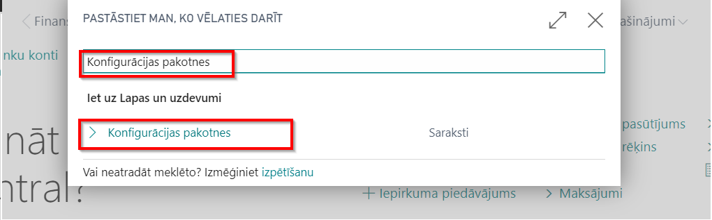
Importējiet konfigurācijas pakotni LV.LVI.STANDARD nospiežot rīkjoslā pogu Importēt pakotni. 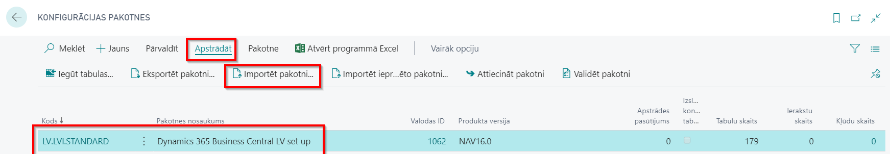
Izvēlieties konfigurācijas pakotni LV.LVI.STANDARD no jūsu failu glabātuves.
Atlasiet LV.LVI.STANDARD pakotni konfigurācijas pakotņu sarakstā un nospiediet pogu Attiecināt pakotni. 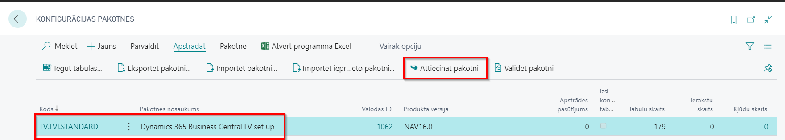
Konfigurācijas pakotne nodrošina sekojošu informāciju:
- Valstu/Reģionu un Valsts/Reģiona tulkojumus;
- Valūtas;
- Kontējumu grupas klientiem, pārdevējiem, krājumiem, bankas norēķinu kontiem, kā arī galvenās biznesa kontējuma grupas, galvenās produktu kontējumu grupas, PVN biznesa kontējumu grupas un PVN produktu kontējumu grupas;
- Galvenos uzstādījumus un PVN kontējuma uzstādījumus;
- Preču nosūtīšanas metodes;
- Izsekojamības kodus;
- Latvijas pasta indeksus;
- Piekļuves tiesību kopas;
- Bankas failu eksporta un importa uzstādījumus;
- Ārējo maksājumu kodus.
Piekļuves tiesību kopas
Lietojot Latvian Base Localization ir nepieciešams piešķirt lietotājiem vai lietotāju grupām sekojošas piekļuves tiesību kopas:
- LV_TRANS_VIEW – paredzēts, lai skatītu pārvadātāju sarakstu un izmantoto to dokumentos
- LV_TRANS_EDIT- paredzēts, lai ievadītu, rediģētu un dzēstu informāciju pārvadātāju sarakstā, un lietotu pārvadātāju informāciju dokumentos.
- LV_FPC_VIEW- paredzēts, lai skatītu ārējo maksājumu kodu sarakstu un izmantoto to žurnālos
- LV_FPC_EDIT- paredzēts, lai ievadītu, rediģētu un dzēstu informāciju ārējo maksājumu kodu sarakstā, un izmantotu to žurnālos.
Priekšnosacījumi
Pēc konfigurācijas pakotnes attiecināšanas, ievadiet sekojošu informāciju:
Klikšķiniet uz pogas Meklēt Lapu vai Atskaiti...
Ierakstiet Darbinieki un izvēlieties to no sadaļas Lapas un Uzdevumi 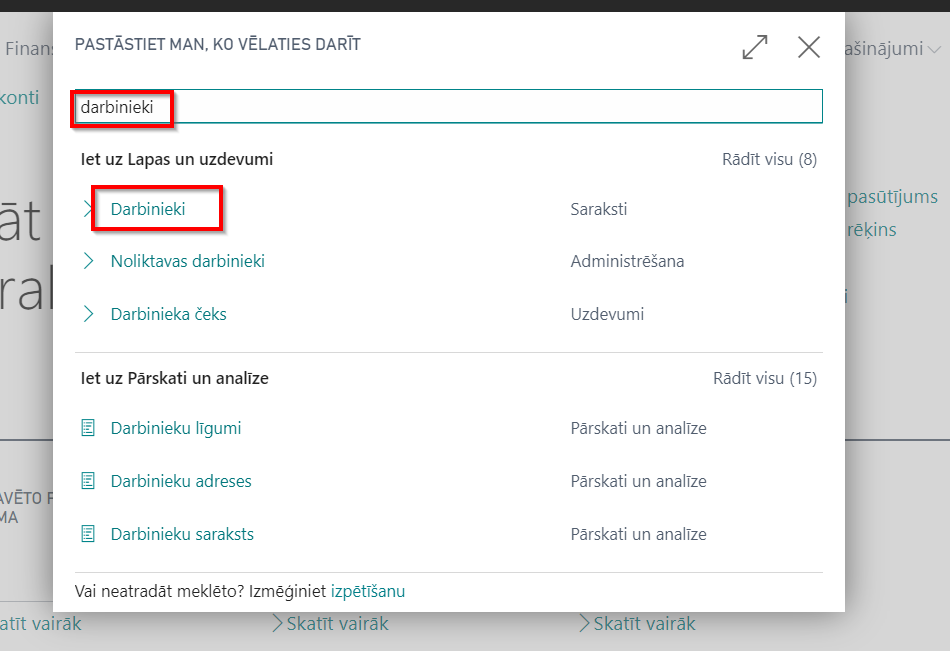
Izveidojiet uzņēmumā jaunus darbiniekus ar sekojošiem ieņemamiem amatiem:
a. Direktors
b. Finanšu vadītājs
c. Galvenais grāmatvedis

Papildiniet Nr., Vārda, Uzvārda, Amata nosaukuma laukus 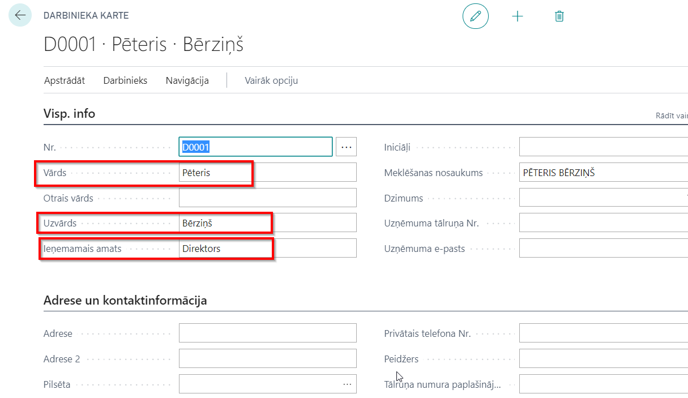
Klikšķiniet uz pogas Meklēt Lapu vai Atskaiti...
Ierakstiet Uzņēmuma informācija un izvēlieties to no sadaļas Lapas un Uzdevumi.

Papildiniet Uzņēmuma informācijas laukus:
Ievadiet
i. Nosaukumu
ii. Adresi
iii. Pasta indeksu
iv. Valsti
v. Reģistrācijas Nr.
vi. PVN reģistrācijas Nr.
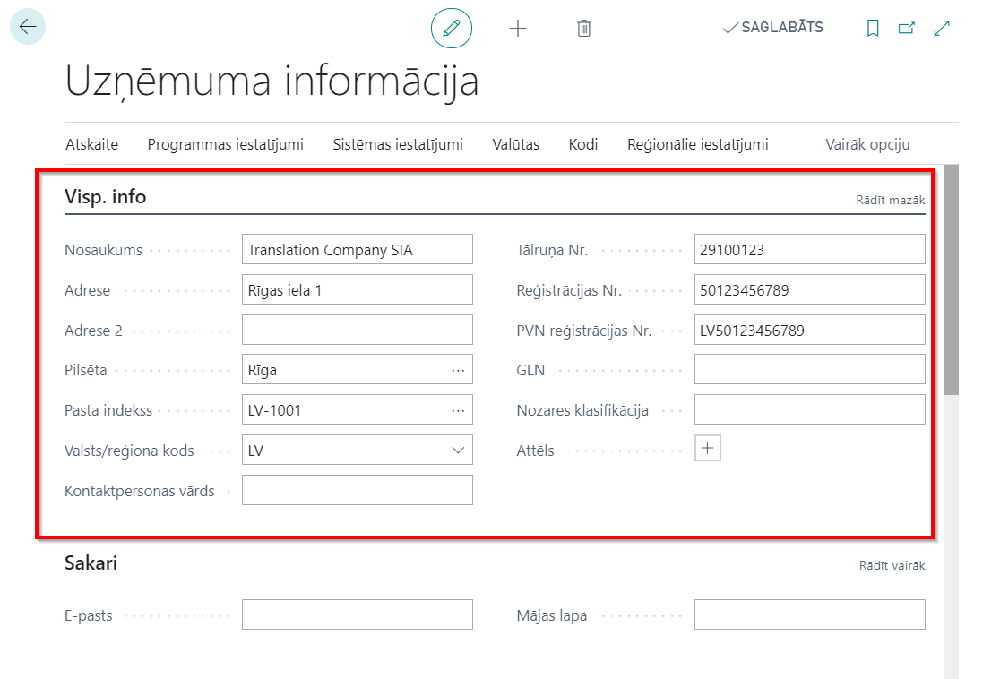
Izvēlieties Vadītāju no darbinieku saraksta
Izvēlieties Finanšu vadītāju no darbinieku saraksta
Izvēlieties Galveno grāmatvedi no darbinieku saraksta
Gadījumā ja Galvenais grāmatvedis netiks norādīts Uzņēmuma Informācijā, dokumentu izdrukās tiks aizstāts ar Finanšu vadītāju. 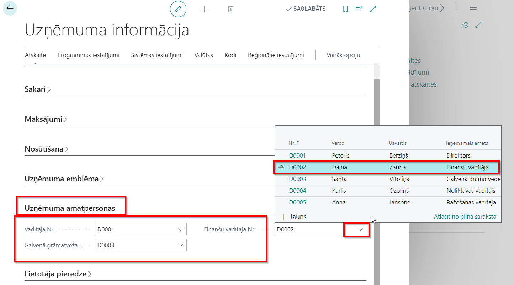
Klikšķiniet uz pogas Meklēt Lapu vai Atskaiti...
Ierakstiet Banku konti un izvēlieties to no sadaļas Lapas un Uzdevumi 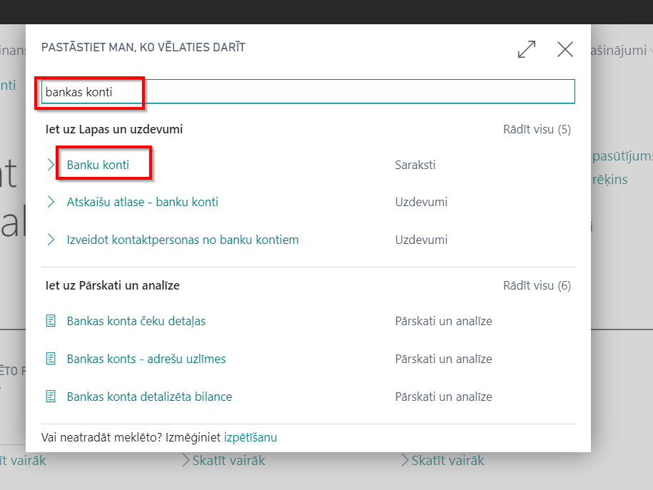
Ievadiet un papildiniet informāciju Bankas konta kartes laukos:
a. Bankas nosaukums
b. Bankas konta Nr.
c. Valsts kods
d. Valūtas kods
e. Bankas kontējuma grupa
f. Swift kods
g. IBAN 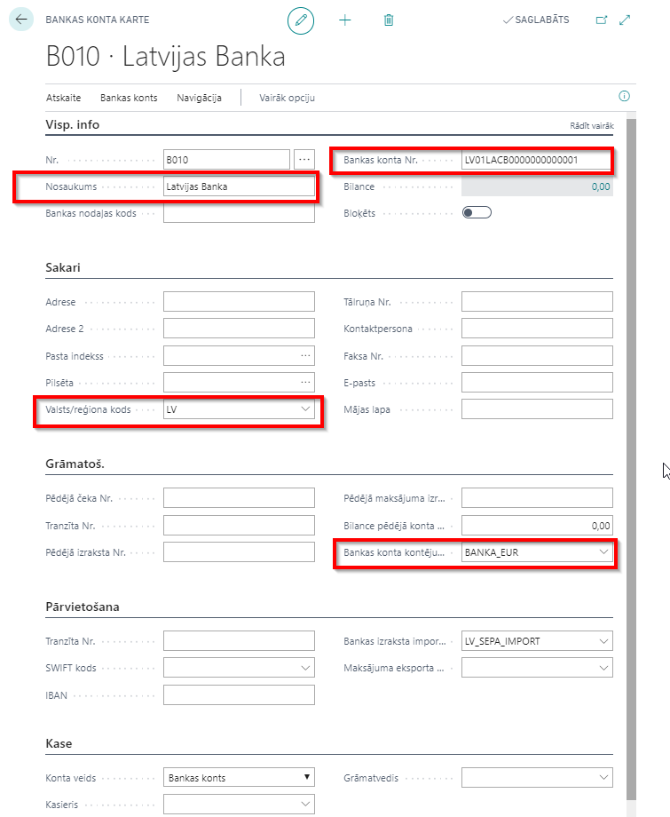
Klikšķiniet uz pogas Meklēt Lapu vai Atskaiti...
Ierakstiet Maksājumu Žurnāli un izvēlieties to no sadaļas Lapas un Uzdevumi 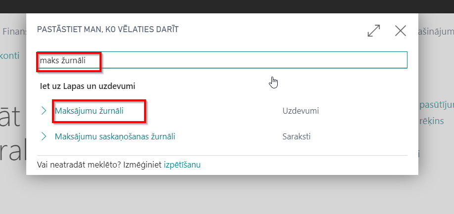
Papildiniet Maksājuma Žurnāla iedaļu:
a. Piešķiriet izvēlētajam bankas kontam korespondējošā konta tipa statusu
b. Piešķiriet izvēlētajam bankas konta Nr. korespondējošā konta Nr.
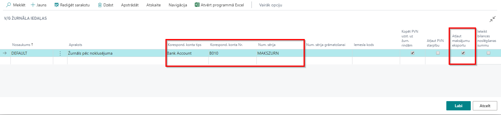
Klikšķiniet uz pogas Meklēt Lapu vai Atskaiti...
Ierakstiet Grāmatvedības periodi un izvēlieties to no sadaļas Lapas un Uzdevumi 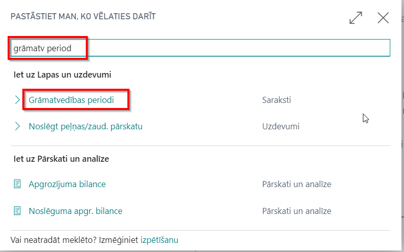
Izveidojiet jaunu finanšu gada periodu Grāmatvedības periodos
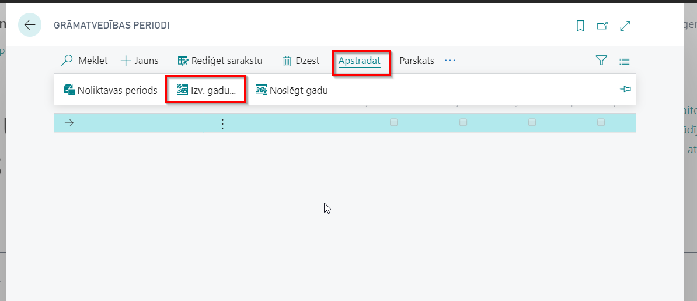
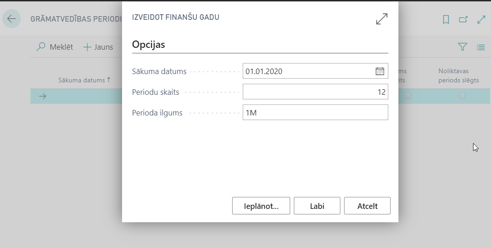
Iestatījumi
Pārvadātāji
Katrs uzņēmums var uzturēt iekšējo un ārpakalpojuma pārvadātāju sarakstu, kur uzturēt informāciju par transportlīdzekli un tā vadītāju. Ievadītās Pārvadātāju kartiņas var tikt izmantotas Pārdošanas, Pirkšanas un Pārvietošanas dokumentos.
- Klikšķiniet uz pogas Meklēt Lapu vai Atskaiti...
- Ierakstiet Pārvadātāji un izvēlieties to no sadaļas Lapas un Uzdevumi

- Lai izveidotu jaunu piegādātāju, nospiediet pogu Jauns
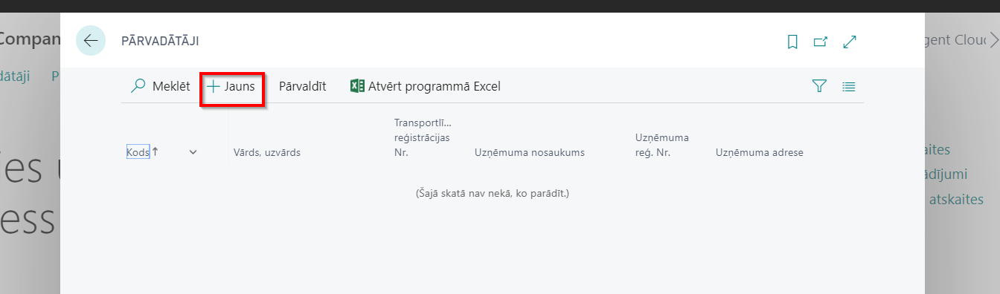
- Pārvadātāja kartiņā var tikt ievadīta sekojoša informācija:
- Kods - norāda iekšējo kodu konkrētam transporta uzņēmumam.
- Vārds, Uzvārds - norāda vārdu, uzvārdu pakalpojumu sniedzējam vai konkrētam šoferim.
- Transportlīdzekļa reģistrācijas Nr.- norāda transportlīdzekļa valsts reģistrācijas numuru.
- Uzņēmuma nosaukums- norāda uzņēmuma nosaukumu pakalpojumu sniedzējam
- Uzņēmuma reģ.Nr.- norāda uzņēmuma reģistrācijas numuru korporatīvo pakalpojumu sniedzējam
- Uzņēmuma adrese - norāda juridisko adresi transporta pakalpojuma sniedzējam
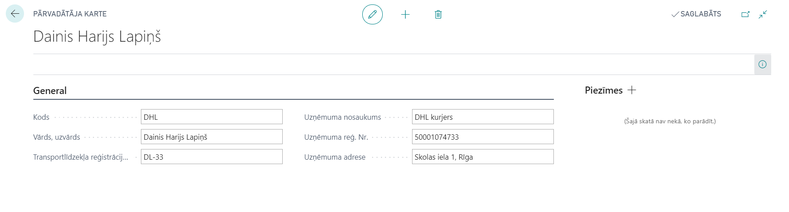
Vietējās bankas
Attiecinot LV.LVI.STANDARD konfigurācijas pakotni, Bankas failu eksporta/ importa uzstādījumi tiek papildināti ar īpašiem bankas maksājumu eksporta un bankas pārskata importa formātiem. Lai korekti varētu eksportēt maksājumu failus un importēt bankas pārskatu failus, jāpapildina bankas konta kartiņas sekojoši lauki:
- Maksājuma eksporta formāts- LV_SEPA_EXPORT
- Bankas izraksta importa formāts- LV_SEPA_IMPORT
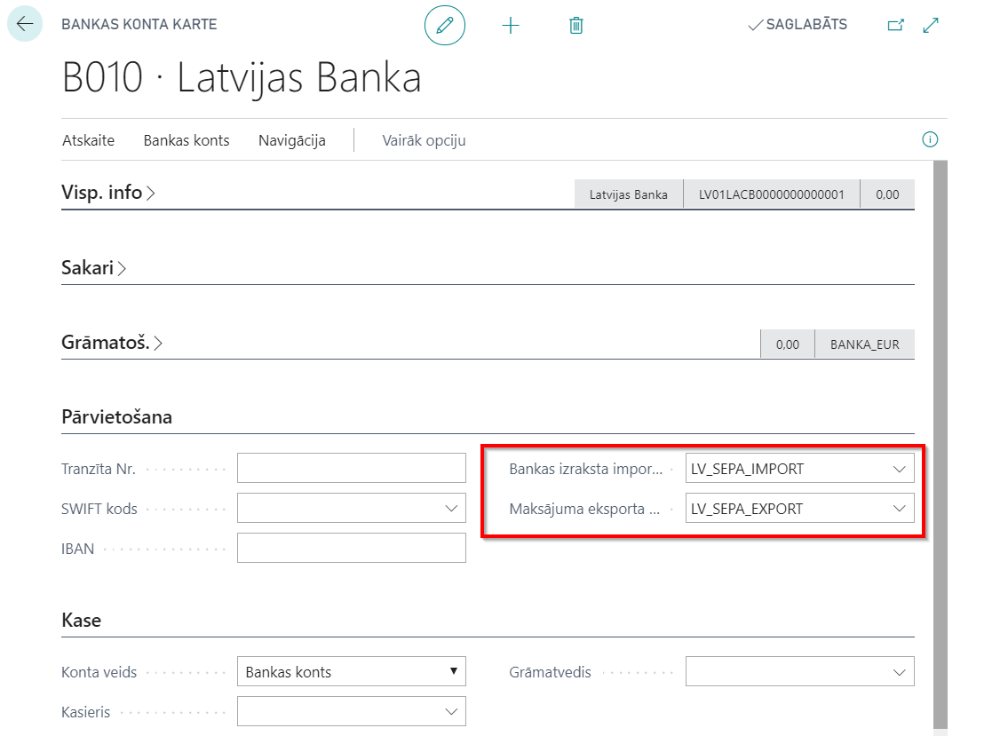
Ārējā maksājuma kodi
Attiecinot LV.LVI.STANDARD konfigurācijas pakotni, ir jāizveido biežāk lietoto ienākošo ārējo maksājumu kodu saraksts, kuru nekavējoties var uzsākt lietot:
- Klikšķiniet uz pogas Meklēt Lapu vai Atskaiti...
Ierakstiet Ārējo maksājumu kodi un izvēlieties to sadaļā Lapas un Uzdevumi. 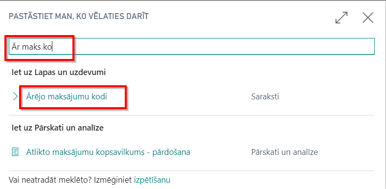
Ja ir nepieciešams ievadīt jaunu maksājuma kodu, nospiediet pogu Jauns un aizpildiet sekojošus laukus kodu tabulā:
- Nr.- norāda ārējā maksājuma kodu, saskaņā ar Nebanku Statistikas atskaišu prasībām;
- Nosaukums - norāda nosaukumu ārējā maksājuma kodam.
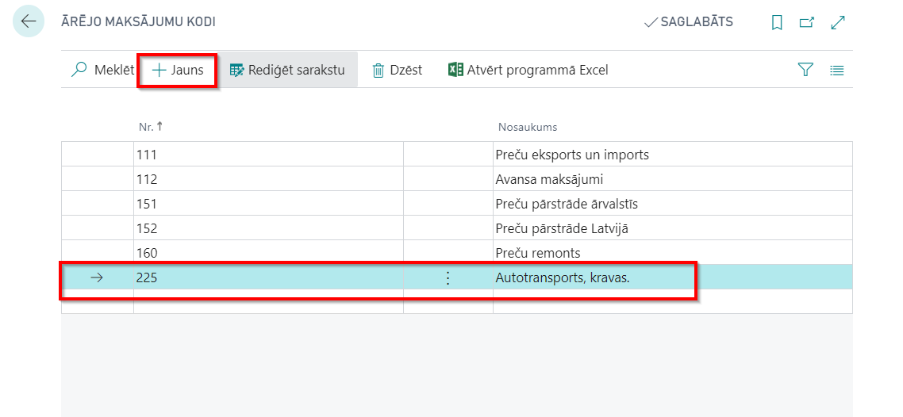
Valūtas maiņas kursa imports
Attiecinot LV.LVI.STANDARD konfigurācijas pakotni, Valūtas maiņas kursa funkcionalitāte tiek sagatavota darbam sistēmā un to ir nepieciešams tikai aktivizēt. Lai aktivizētu Valūtas maiņas kursa pakalpojumus, nepieciešams veikt sekojošus soļus:
- Klikšķiniet uz pogas Meklēt Lapu vai Atskaiti...
- Ierakstiet Valūtu kursu pakalpojumi un izvēlieties to no sadaļas Lapas un Uzdevumi
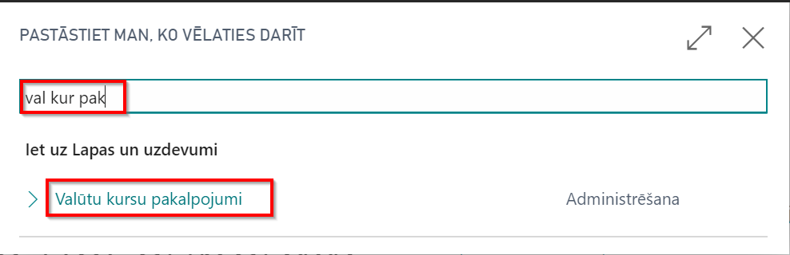
- Izvēlaties ECB-EXCHANGE-RATES no Valūtas kursu pakalpojuma saraksta un nospiediet pogu Iespējot
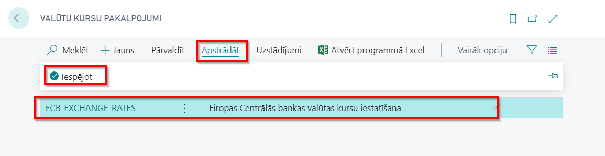
Dokumentu izdrukas
Dokumentu izdrukai nav nepieciešami īpaši uzstādījumi un tam ir pieeja sekojošās funkcionalitātēs:
- Pārdošanas pasūtījumi
- Pārdošanas rēķini
- Pārdošanas priekšapmaksas rēķini
- Iegrāmatotie pārdošanas rēķini
- Pārdotā atgriešanas pasūtījumi
- Pārdošanas kredītrēķini
- Iegrāmatotie pārdošanas kredītrēķini
- Pārvietošanas pasūtījumi
- Iegrāmatota pārdošanas nosūtīšanas pavadzīme
- Pirkuma atgriešanas pasūtījumi
- Iegrāmatotie pirkšanas kredītrēķini
- Klientu salīdzināšanās dokumentācija
- Piegādātāju salīdzināšanās dokumentācija
- Inventarizācijas dokumentācija
- Pārvietošanas dokumentācija
- Krājumu norakstīšanas dokumentācija
- Iegrāmatotā krājumu norakstīšanas dokumentācija
- Pamatlīdzekļu kartiņa
- Pamatlīdzekļu ekspluatācijā nodošanas dokumentācija
- Pamatlīdzekļu inventarizācijas dokumentācija
- Pamatlīdzekļu norakstīšanas dokumentācija
Avansa norēķinu pārskats
Attiecinot LV.LVI.STANDARD konfigurācijas pakotni, sistēma veic visus nepieciešamos iestatījumus Piegādātāju veidnēs un Piegādātāju kontējuma grupās. Lai identificētu avansa norēķinus, veiciet sekojošus soļus:
- Izveidojiet jaunu piegādātāja kartiņu avansa norēķinu personai
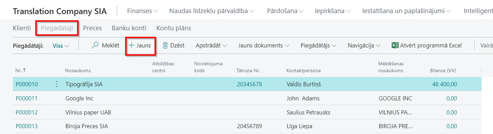
- Izvēlieties atbilstošo piegādātāja veidni
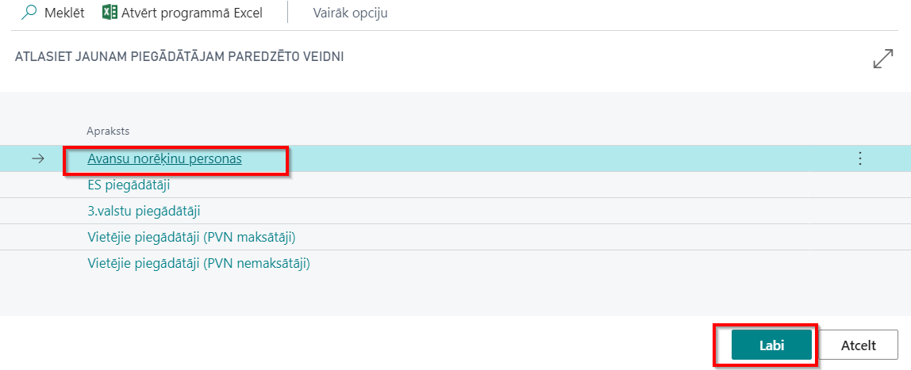
- Pārliecinieties, ka attiecīgās avansa norēķinu personas kartītē Piegādātāja kontējuma grupā ir iestatīta vērtība AVNOR
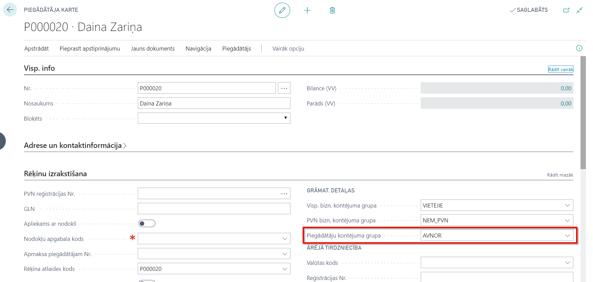
- Lai Pirkšanas rēķinā un Pirkšanas Kredītrēķinā aktivizētu Grāmatojuma apraksta lauku, izmantojiet Personalizāciju.
Kā lietot
Kā pielietot: Pārvadātājus dokumentos
Pārvadātāju funkcionalitāte nodrošina pārvadātāju kataloga uzturēšanu un tālāku to izmantošanu kravas pārvadājuma dokumentos. Pārvadātāju sarakstā iespējams ievadīt gan pašu uzņēmuma transporta vienības un to vadītājus, gan citu uzņēmumu nodrošināto transportu. Informācija par pārvadātājiem tiek saglabāta iegrāmatotajos dokumentos. Pārvadātājus iespējams norādīt Piegādes sadaļā sekojošos dokumentos:
- Pārdošanas pasūtījums;
- Pārdošanas pavadzīme;
- Pārvietošanas pasūtījums;
- Iepirkto preču atgriešanas pasūtījums.
Augstākminētajos dokumentos informāciju par pārvadātāju var iekļaut izvēloties atbilstošo Pārvadātāja kodu. Ierakstot kodu, sistēma automātiski aizpilda pārvadājuma informācijas laukus ar Pārvadātāja Vārdu, Transportlīdzekļa reģ. Nr., Uzņēmuma nosaukumu, Uzņēmuma reģ. Nr., Adresi - informācija, kas bija ievadīta pārvadātāja kartiņā iepriekš.
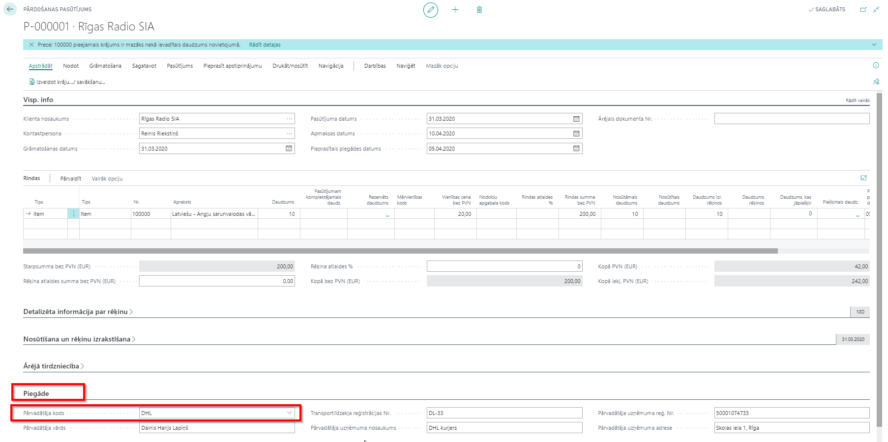
Ja pārvadātāja koda lauciņu atstāj tukšu, tad pārējos laukos informāciju par pārvadātāju var ievadīt manuāli.
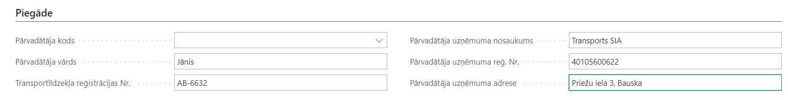
Izdrukājot iekšzemes preču pārdošanas pavadzīmi, ir iespēja izvēlēties vai drukāt informāciju par pārvadātāju no dokumenta vai izmantot informāciju par nosūtītāju vai saņēmēju, vai arī atstāt informāciju par pārvadātāju tukšu. 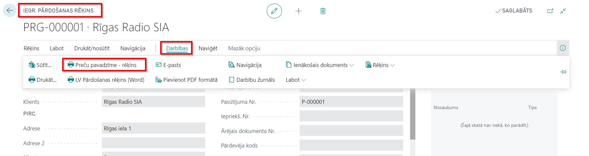

Pēc dokumentu iegrāmatošanas informācija par pārvadātāju ir redzama sekojošos dokumentos:
- Iegrāmatota pārdošanas nosūtīšanas pavadzīme
- Iegrāmatots pārdošanas rēķins
- Iegrāmatota atgriezto preču nosūtīšanas pavadzīme
- Iegrāmatots iepirkuma kredītrēķins
- Iegrāmatota iekšējās nosūtīšanas pavadzīme
Kā lietot: Vietējās bankas
Vietējo banku funkcionalitāte nodrošina:
- iespēju eksportēt maksājumu failus ISO standartā uz Latvijas banku internetbankām;
- iespēju lejupielādēt kontu pārskatus ISO formātā Dynamics 365 Business Central
Maksājumu eksporta faila
Mērķis: nodrošināt iespēju eksportēt maksājuma failus ISO formātā uz Latvijas banku internetbankām.
Piekļuve: var piekļūt no Maksājumu žurnāliem.
Priekšnosacījumi: Maksājumu žurnāla iedaļā jābūt norādītam balansējošam kontam, kā arī, ir jābūt atzīmētai atļaujai maksājuma eksportēšanai. 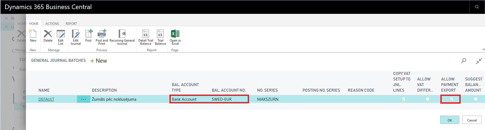
Lai varētu izmantot šo funkcionalitāti, nepieciešams veikt sekojošas darbības:
Sagatavojiet maksājumus Maksājuma žurnālā.
Sagatavojiet eksporta failu, nospiežot pogu Eksportēt, kas atrodas maksājuma uzdevuma darbību rīkjoslā. 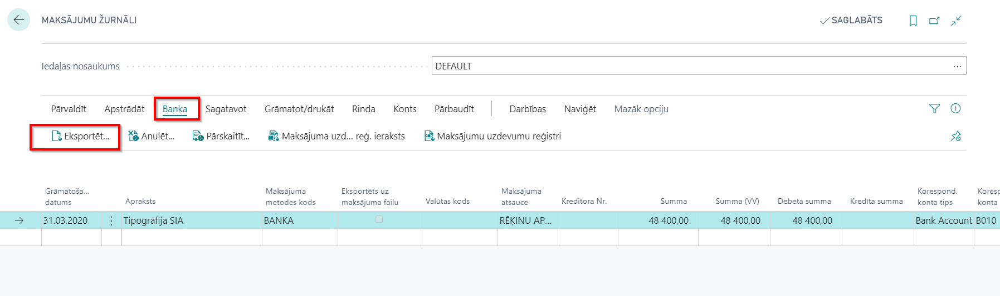
Saglabājiet eksporta failu un lejupielādējiet to internetbankā.
Importējiet konta izdruku
Mērķis: nodrošina iespēju lejupielādēt konta pārskata failu ISO formātā Dynamics 365 Business Central.
Piekļuve: pieejams no Maksājumu saskaņošanas žurnāla.
Priekšnosacījumi: Bankas konta kartiņā jābūt ievadītam bankas konta numuram, IBAN un jābūt definētam bankas pārskatos izmantotajam importa formātam. Lai izmantoto funkcionalitāti, jāveic sekojoši soļi:
Klikšķiniet uz pogas Meklēt Lapu vai Atskaiti...
Ierakstiet Maksājumu saskaņošanas žurnāli un izvēlaties to sadaļā Lapas un uzdevumi 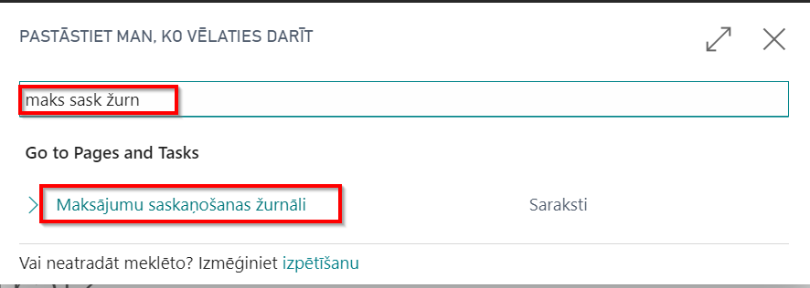
Nospiediet pogu Importēt bankas transakcijas

Klikšķiniet uz pogas Izvēlēties un atzīmējiet konta pārskata failu, ko vēlaties importēt 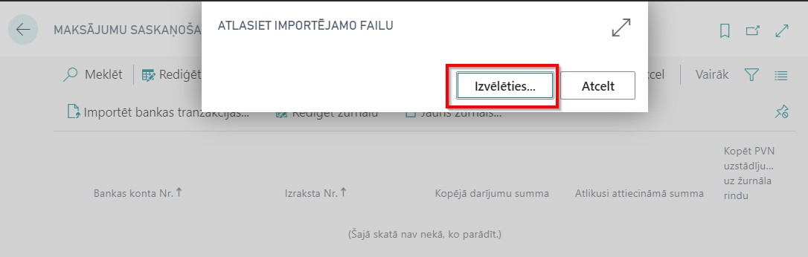
Ielādētās transakcijas Turpiniet automātiski vai manuāli attiecināt uz rēķiniem 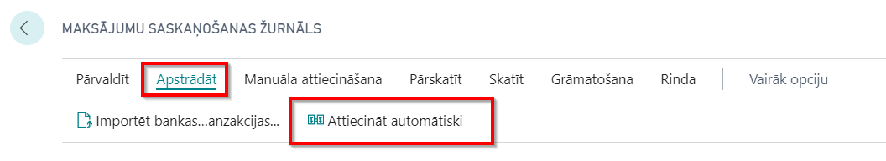 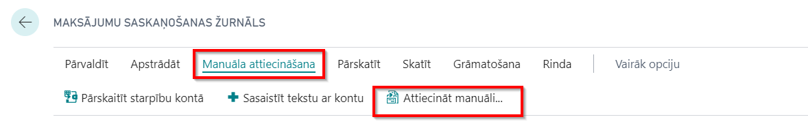
Pēc visu transakciju attiecināšanas un apstiprināšanas, iegrāmatojiet maksājuma saskaņošanas žurnālu 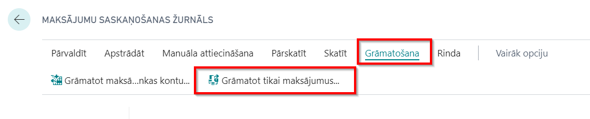
Kā lietot: Ārvalstu maksājumi
Piešķiriet transakcijām ārvalstu maksājuma kodu.
Mērķis: Latvijas Banka pieprasa norādīt ārvalstu maksājuma kodu ārējiem ienākošajiem maksājumiem. Grāmatojot ienākošos ārvalstu maksājumus, konkrētajai transakcijai ir jāpiešķir atbilstošs ārvalstu maksājuma kods. Pretējā gadījumā Ārvalstu maksājumu atskaiti sagatavot nevarēs.
Piekļuve: pieejams Maksājumu žurnālos un Maksājumu saskaņošanas žurnālos.
Priekšnosacījumi: Ir jāaizpilda ārvalstu maksājumu saraksts. Lai varētu izmantot funkcionalitāti, jāizpilda sekojoši soļi:
Klikšķiniet uz pogas Meklēt Lapu vai Atskaiti...
Ierakstiet Maksājumu žurnāli un izvēlieties to no sadaļas Lapas un Uzdevumi 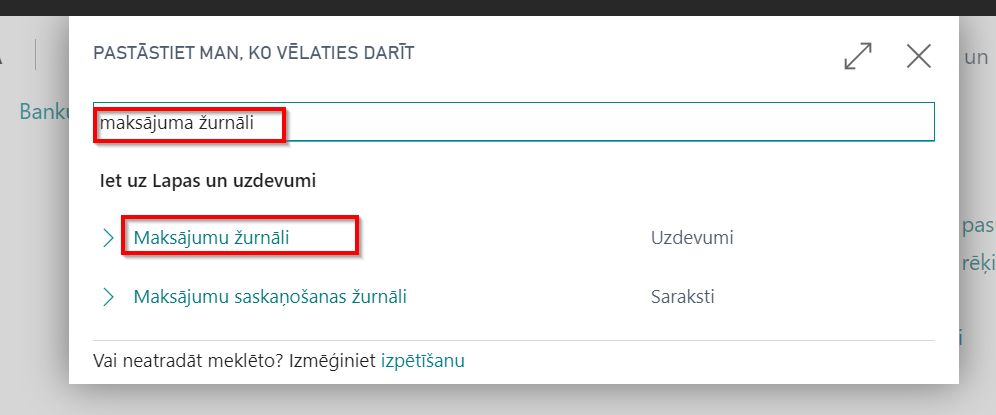
Izveidojiet maksājuma žurnāla ierakstu par ienākošu maksājumu no ārvalstu klienta. Piešķiriet ārvalstu maksājuma kodu pirms maksājuma žurnāla iegrāmatošanas. 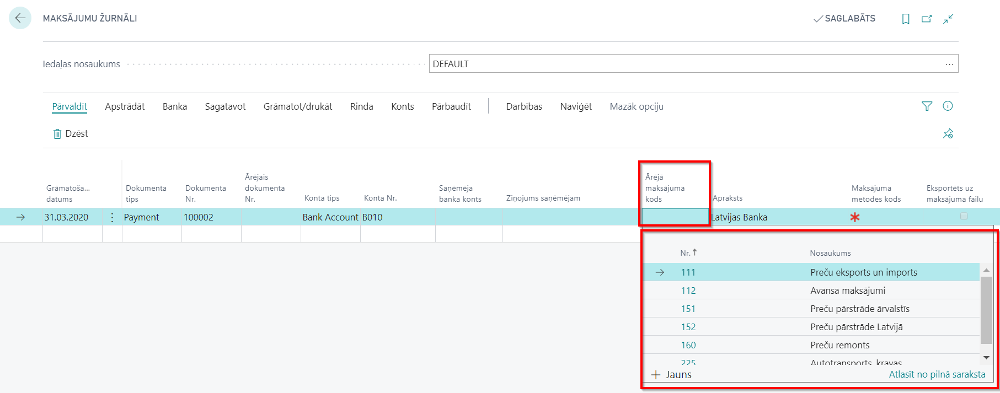
Šos pašus augstākminētos soļus, grāmatojot ārvalstu maksājumus, veiciet arī maksājuma saskaņošanas žurnālā. Importējiet bankas transakcijas Maksājuma saskaņošanas žurnāla rindā un ārvalstu klientu veikto maksājumu rindās norādiet atbilstošo ārvalstu maksājumu kodu. 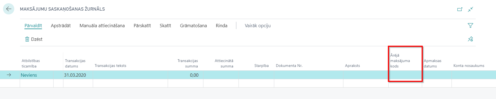
Sagatavojiet atskaiti Ārējie banku maksājumi 1-IB
Mērķis: Ārējo banku maksājumu 1-IB atskaite tiek sagatavota pēc Latvijas Bankas prasībām iesniegt informāciju par saņemtajiem maksājumiem no ārvalstīm.
Piekļuve: var piekļūt no meklēšanas funkcionalitātes.
Priekšnosacījumi: Jāievada visi no ārvalstīm saņemtie maksājumi. Katram maksājumam jāpiešķir atbilstošs ārvalstu maksājuma kods pirms maksājumu žurnāls tiek iegrāmatots. Lai varētu lietot, funkcionalitāti, jāveic sekojoši soļi:
Klikšķiniet uz pogas Meklēt Lapu vai Atskaiti...
Ierakstiet Ārējie banku maksājumi 1-IB un izvēlieties to no sadaļas Pārskati un analīze 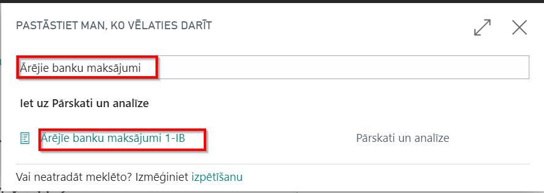
Definējiet drukāšanas iespējas
Drukāšanas opcijas:
- Gads – norāda atskaites perioda gadu, formātā GGGG;
- Mēnesis – izvēlas atskaites perioda mēnesi;
- Izpildītājs – norāda atbildīgo personu, kas sagatavoja atskaiti;
- Darījuma summas limits, VV – norāda transakcijas minimālo summu, kura jāatspoguļo atskaitēs. Visas transakcijas virs norādītā limita tiks iekļautas atskaitē.
- Ir arī pieejams transakciju filtrs pēc kritērijiem: Bankas konta numurs un ārējā maksājuma kods. 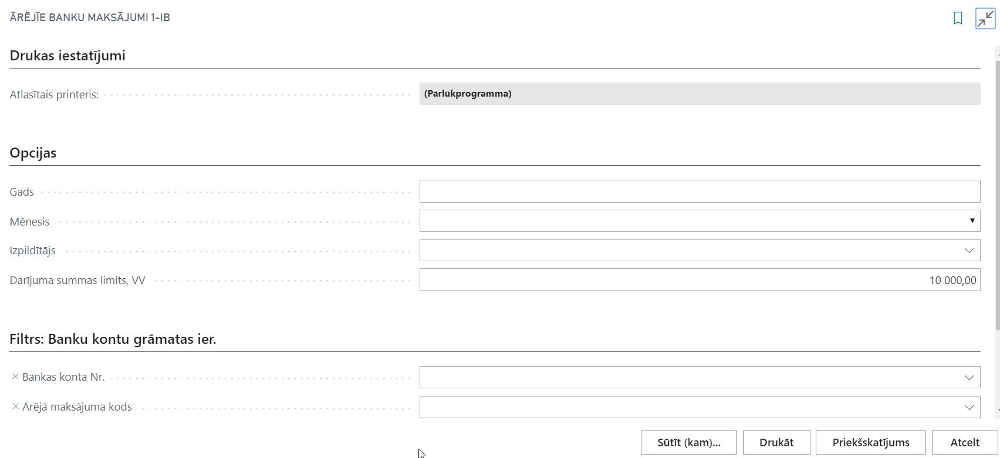
Kā lietot: Valūtas kursu imports
Mērķis: darījumus ārvalstu valūtās sistēmā reģistrē vietējā valūtā, balstoties uz valūtas maiņas kursu. Valūtas maiņas kursus sistēmā ir iespēja augšupielādēt automātiski, pamatojoties uz periodisku darba uzdevumu, vai arī lietotājs to var paveikt manuāli. Informācijas avots ir Eiropas Centrālā Banka (http://www.ecb.int/stats/exchange/eurofxref/html/index.en.html) Funkcionalitāte nodrošina valūtas maiņas kursa importu visiem valūtas kodiem 90 dienu periodam, par kuru maiņas kursu nodrošina Eiropas Centrālā banka. Citus valūtu maiņas kursus valūtām, kuras nepublicē Eiropas Centrālā banka, var ievadīt manuāli.
Piekļuve: var piekļūt no valūtu saraksta.
Priekšnosacījumi: valūtas kartiņas ir jāpapildina ar valūtas kodu un attiecīgo standarta uzstādījumu. Lai varētu lietot funkcionalitāti manuālā režīmā, nepieciešams veikt sekojošas darbības:
Klikšķiniet uz pogas Meklēt Lapu vai Atskaiti...
Ierakstiet Valūtas un izvēlieties tās no sadaļas Lapas un uzdevumi 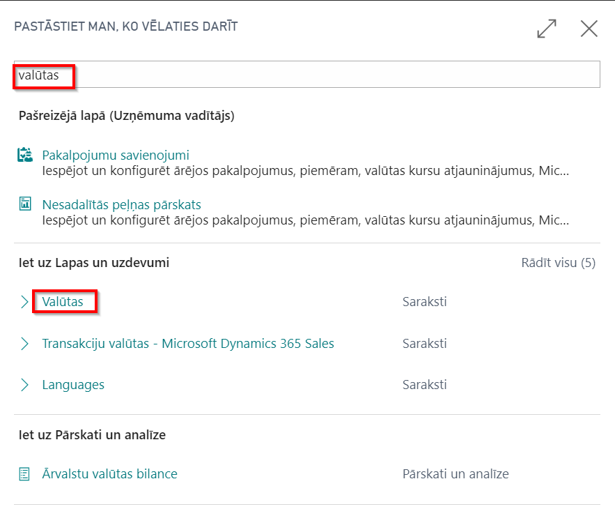
Klikšķiniet uz pogas Importēt valūtu kursus

Definējiet Valūtas kursu importa opcijas Opcijas:
- No datuma – norāda perioda sākumu, par kuru jāimportē valūtas kursi (noklusējumā tiek norādīts tekošās dienas datums)
- Līdz datumam – norāda perioda beigas, par kuru jāimportē valūtas kursus (noklusējumā tiek norādīts tekošās dienas datums)
- Valūtu kursu importa uzstādījuma kods – izvēlieties no saraksta ECB-EXCHANGE-RATES uzstādījumu kodu, kas tika ieimportēts sistēmā ar LV.LVI.STANDARD konfigurācijas pakotni.

Piezīme:
Eiropas Centrālā banka publicē valūtas maiņas kursus tekošajā daba dienā pulksten 15:15. Visi ārvalstu valūtu darījumi ir jāreģistrē sistēmā, izmantojot valūtas maiņas kursus, kas ir aktuāli tekošās dienas sākumā (publicēti iepriekšējā dienā). Ja valūtas maiņas kurss tekošajā dienā ir jau pieejams (pēc 15:15), tad vērtība tiek parādīta laukā Valūtas maiņas kursa korekcija. Valūtas pārvērtēšana tiek veikta, pamatojoties uz korekcijas valūtas maiņas kursa summu perioda beigās.
Ārvalstu valūtas maiņas kursa summas tiek aprēķinātas kā ārvalstu valūtas summa uz 1 EUR (1,00 EUR = 1,3317 USD).

Kā lietot: Dokumentu izdrukas
Latvian language (Latvia) nodrošina sekojošu izdruku sagatavošanu Dynamics 365 Business Central, kas atbilst Latvijas vietējām likumdošanas prasībām:
- LV Pārdošanas rēķins no neiegrāmatotiem pārdošanas dokumentiem - Pārdošanas pasūtījums, pārdošanas rēķins
- LV Pārdošanas avansa rēķins no neiegrāmatotiem pārdošanas dokumentiem - Pārdošanas pasūtījums
- LV Pārdošanas rēķins no iegrāmatotiem pārdošanas dokumentiem - Iegrāmatots pārdošanas rēķins
- LV Pārdošanas kredītrēķins no neiegrāmatotiem atgriešanas dokumentiem - Pārdotā atgriešanas pasūtījums, Pārdošanas kredītrēķins
- LV Pārdošanas kredītrēķins no iegrāmatotiem atgriešanas dokumentiem - Iegrāmatots pārdošanas kredītrēķins
- LV Iepirkuma kredītrēķins no neiegrāmatotiem pirkuma atgriešanas dokumentiem – Pirkuma atgriešanas rīkojums, Iepirkuma kredītrēķins
- LV Iepirkuma kredītrēķins no iegrāmatotiem pirkuma atgriešanas dokumentiem – Iegrāmatots iepirkuma kredītrēķins Rekomendēts sagatavot izdrukas augstāk minētajiem iegrāmatotajiem dokumentiem.
Pārdošanas rēķins
Mērķis: tiek sagatavots klientiem par piegādātajām precēm vai sniegtajiem pakalpojumiem kā darījumu apliecinošs dokuments. Izdrukai ir nepieciešami dati, lai to varētu uzskatīt par attaisnojuma dokumentu, iepirkuma dokumentu (kas apliecina preču piegādi), rēķinu par pakalpojumu, PVN rēķinu. Izdrukāt var neiegrāmatotu pārdošanas dokumentu - Pārdošanas pasūtījumu un rēķinu; izdrukāt var iegrāmatotus dokumentus- Iegrāmatotu pārdošanas rēķinu. Drukāšanas poga pārdošanas rēķiniem ir rīkjoslas sadaļā Darbības. 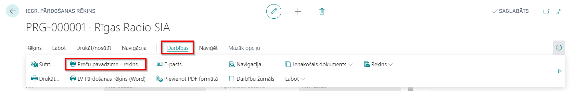
Priekšnosacījumi: Pārdošanas pasūtījumam un Pārdošanas rēķinam ir jābūt statusā Nodots. Iegrāmatotam pārdošanas rēķinam priekšnosacījumu nav.
Drukāšanas opcijas: Šai izdrukai ir pieejamas sekojošas drukāšanas opcijas:
- Kopiju skaits – nosaka cik daudz papildus oriģinālajam dokumentam kopijas ir jāizdrukā; var ievadīt jebkuru veselu skaitli.
- Pakalpojumu rēķins – ja aktivizēts, tad izdruka izslēdz informāciju, kas attiecas uz preces piegādi (Pārdevēja piegādes adrese, Klienta piegādes adrese), pārvadājuma informāciju un izdrukai nav paredzēta vieta klienta parakstam.
- Drukāt maksātāju – ja aktivizēts, tad ir iespēja rēķina galvenē zem klienta informācijas izdrukāt Maksātāja informāciju. Attiecas tikai uz gadījumiem, kad Klients, kas veic apmaksu, atšķiras no klienta, kas saņem preci/pakalpojumu.
- Drukāt pārvadātāju - iespēja izvēlēties no saraksta izdrukāšanai informāciju par pārvadātāju: informācija no dokumenta, informācija par nosūtītāju, informācija par saņēmēju vai nedrukāt informāciju par pārvadātāju vispār.
- Drukāt summu, VV – tiek izmantots rēķinos ārvalstu valūtās. Ja aktivizēts, tad papildus rindas ar summām vietējā valūtā (summa bez PVN, PVN%, kopā ieskaitot PVN) tiek izdrukātas rēķinā.
- Drukāt pārdevēja vārdu, uzvārdu – ja aktivizēts, pārdevēja vārds, uzvārds tiek izprintēts rēķina parakstu zonā; šajā gadījumā rēķina dokumentā ir jānorāda pārdevēja kods.
- Drukāt PVN atšifrējumu – ja aktivizēts, tad norāda informāciju par PVN atšifrējumu (PVN ID, PVN%, PVN apliekamā bāze, PVN summa) dokumenta valūtā. 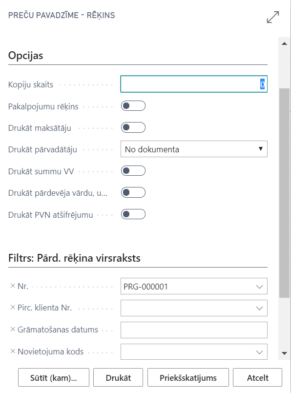
Kad ir atlasītas drukāšanas opcijas, ir iespējams izmantot standarta funkcijas: Nosūtīt uz..., Drukāt, Priekšskatīt.

Pārdošanas avansa rēķins
Mērķis: klientam tiek sagatavots kā darījumu attaisnojošs dokuments priekšapmaksas veikšanai par vēl nepiegādātu preci/pakalpojumu. Izdrukai ir visa nepieciešamā informācija avansa maksājuma veikšanai.
Drukāšanai pieejams no: rēķinu var izdrukāt no neiegrāmatoto pārdošanas dokumentu saraksta - Pārdošanas pasūtījumi. 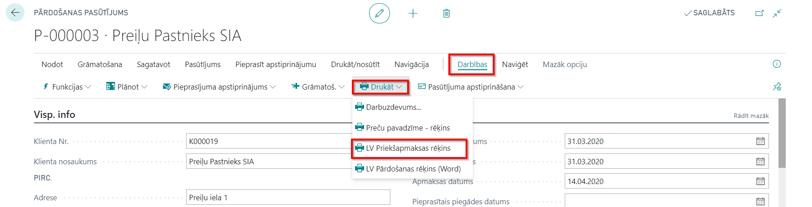
Priekšnosacījumi: Priekšapmaksas procentuālo skaitli ir jāieraksta pārdošanas pasūtījumā vai pārdošanas pasūtījuma rindiņās. Pārdošanas avansa rēķinu ir jāizdrukā pirms Avansa rēķina iegrāmatošanas. 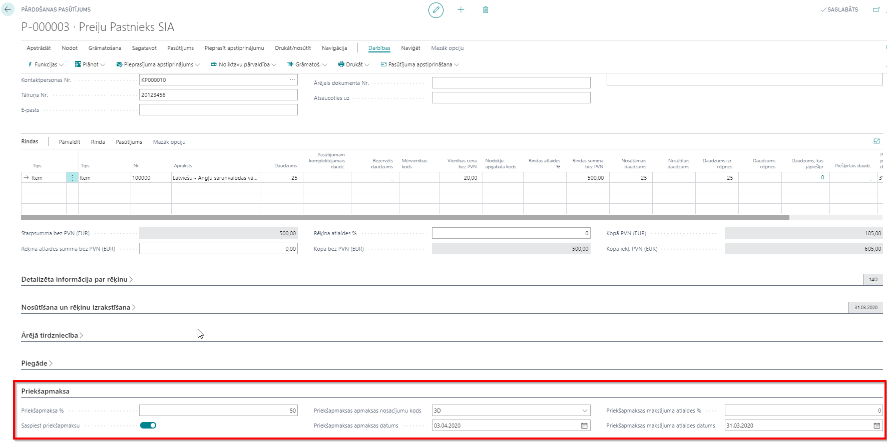
Drukāšanas opcijas: sekojošas drukāšanas opcijas ir pieejamas:
- Kopiju skaits – nosaka, cik daudz kopijas papildus oriģinālajam dokumentam ir jāizdrukā; var ievadīt jebkuru veselu skaitli.
- Drukāt maksātāju – ja aktivizēts, tad ir iespēja rēķina galvenē zem klienta informācijas izdrukāt Maksātāja informāciju. Attiecas tikai uz gadījumiem, kad Klients, kas veic apmaksu, atšķiras no klienta, kas saņem preci/pakalpojumu.
- Drukāt summu, VV – tiek izmantots rēķinos ārvalstu valūtās. Ja aktivizēts, tad papildus rindas ar summām vietējā valūtā (summa bez PVN, PVN%, kopā ieskaitot PVN) tiek izdrukātas rēķinā.
- Drukāt pārdevēja vārdu, uzvārdu – ja aktivizēts, pārdevēja vārds, uzvārds tiek izprintēts rēķina parakstu zonā; šajā gadījumā rēķina dokumentā ir jānorāda pārdevēja kods.
- Drukāt PVN atšifrējumu – ja aktivizēts, tad norāda informāciju par PVN atšifrējumu (PVN ID, PVN%, PVN apliekamā bāze, PVN summa) dokumenta valūtā. 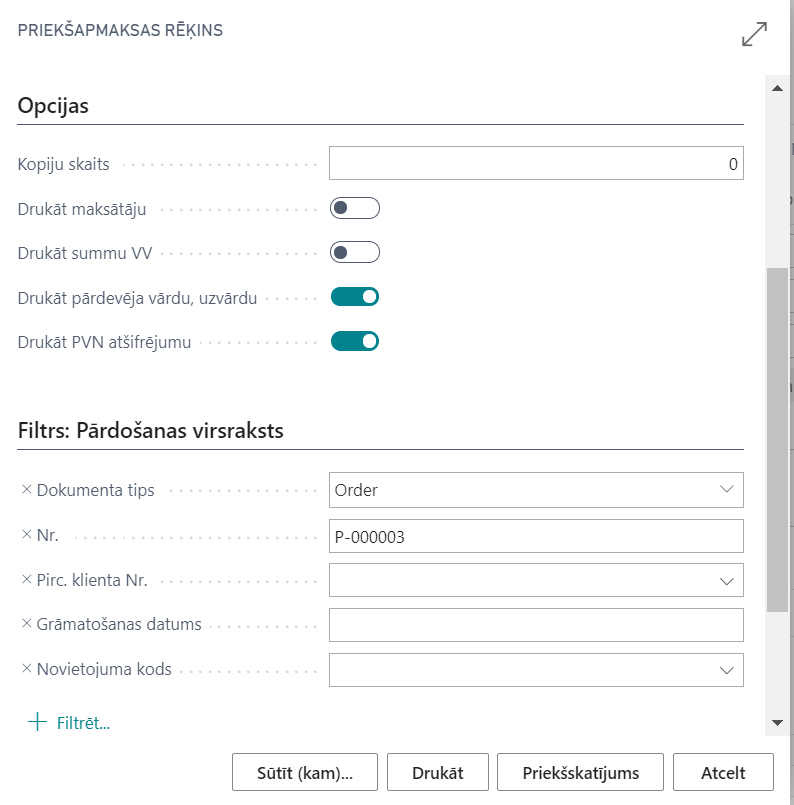 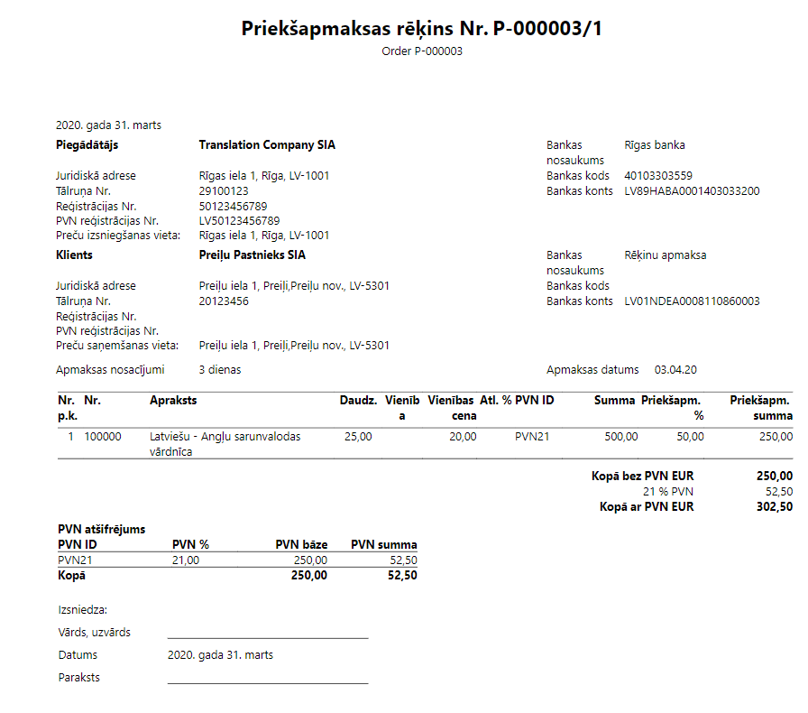
Pārdošanas kredītrēķins
Mērķis: tiek sagatavots un iesniegts klientam par atgrieztu preci, vai atsauktu pakalpojumu kā attaisnojošs dokuments. Izdrukai ir nepieciešami dati, lai to varētu uzskatīt par attaisnojuma dokumentu, iepirkuma dokumentu (kas apliecina preču piegādi), rēķinu par pakalpojumu, PVN rēķinu.
Drukāšanai pieejams no: neiegrāmatotiem pārdoto preču atgriešanas dokumentiem- Pārdoto preču atgriešanas pasūtījums, Pārdošanas kredītrēķins; Iegrāmatots atgriešanas dokuments - Iegrāmatots pārdošanas kredītrēķins. Drukāšanas poga pārdoto preču atgriešanas pasūtījumam ir rīkjoslas sadaļā Darbības. 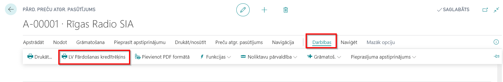
Drukāšanas poga pārdošanas kredītrēķiniem ir rīkjoslas sadaļā Darbības. 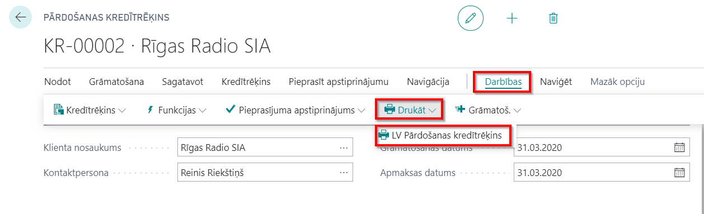
Drukāšanas poga iegrāmatotam pārdošanas kredītrēķinam ir rīkjoslas sadaļā Darbības. 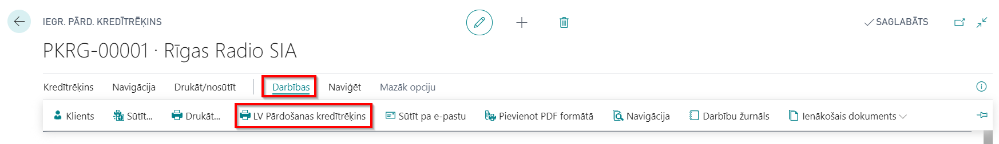
Priekšnosacījumi: Pārdoto preču atgriešanas pasūtījumam un Pārdošanas kredītrēķinam jābūt statusā: Nodots. Priekšnosacījumi iegrāmatotiem pārdošanas kredītrēķiniem nav.
Drukāšanas opcijas:
- Kopiju skaits – nosaka, cik daudz kopijas papildus oriģinālajam dokumentam ir jāizdrukā. Var ievadīt jebkuru veselu skaitli.
- Pakalpojumu rēķins – ja aktivizēts, tad izdruka izslēdz informāciju, kas attiecas uz preces piegādi (Pārdevēja piegādes adrese, Klienta piegādes adrese), pārvadājuma informāciju un izdrukai nav paredzēta vieta klienta parakstam.
- Drukāt maksātāju – ja aktivizēts, tad ir iespēja rēķina galvenē zem klienta informācijas izdrukāt Maksātāja informāciju. Attiecas tikai uz gadījumiem, kad Klients, kas veic apmaksu, atšķiras no klienta, kas saņem preci/pakalpojumu.
- Drukāt pārvadātāju - iespēja izvēlēties no saraksta izdrukāšanai informāciju par pārvadātāju: informācija no dokumenta, informācija par nosūtītāju, informācija par saņēmēju vai nedrukāt informāciju par pārvadātāju vispār.
- Drukāt summu, VV – tiek izmantots rēķinos ārvalstu valūtās. Ja aktivizēts, tad papildus rindas ar summām vietējā valūtā (summa bez PVN, PVN%, kopā ieskaitot PVN) tiek izdrukātas rēķinā.
- Drukāt pārdevēja vārdu, uzvārdu – ja aktivizēts, pārdevēja vārds, uzvārds tiek izprintēts rēķina parakstu zonā; šajā gadījumā rēķina dokumentā ir jānorāda pārdevēja kods.
- Izsniegšanas vietā drukāt juridisko adresi – ja aktivizēts, tad klientiem, kuri atgriež preci, piegādes adreses vietā tiek izdrukāta juridiskā adrese.
- Drukāt PVN atšifrējumu – ja aktivizēts, tad norāda informāciju par PVN atšifrējumu (PVN ID, PVN%, PVN apliekamā bāze, PVN summa) dokumenta valūtā.
 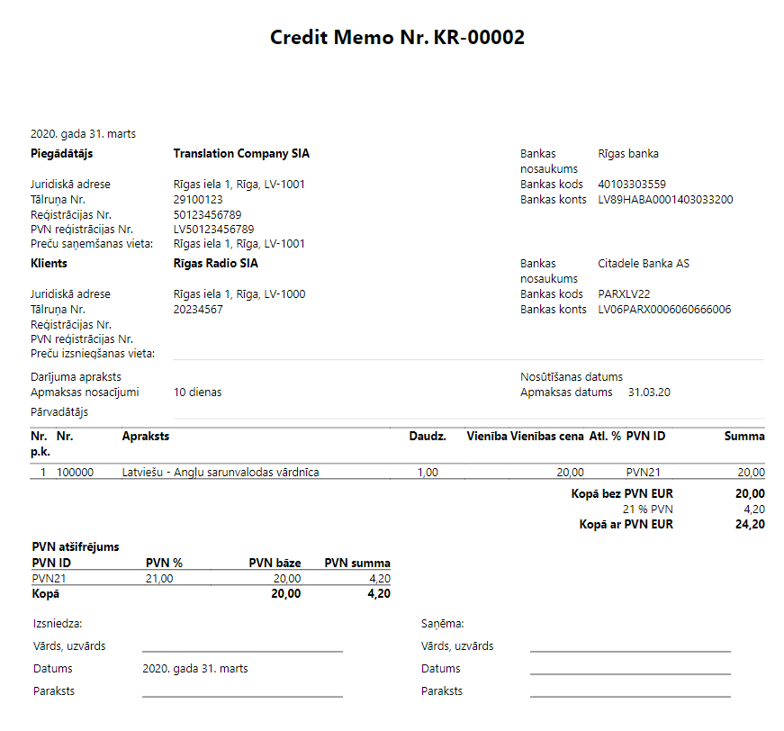
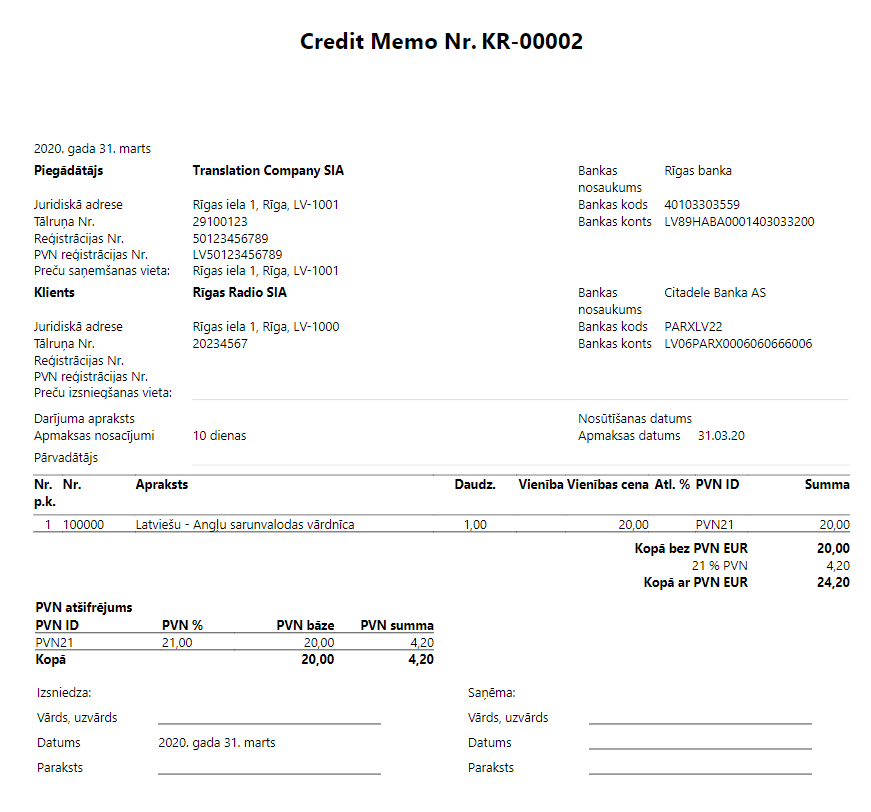
Iepirkuma kredītrēķins
Mērķis: To sagatavo piegādātājs, kam prece tiek atgriezta. Izdrukai ir nepieciešami dati, lai to varētu uzskatīt par attaisnojuma dokumentu, iepirkuma dokumentu (apstiprinot preču piegādi), pakalpojuma rēķinu, PVN rēķinu.
Drukāšanai pieejams no: neiegrāmatoti iepirkuma atgriešanas dokumenti – Iepirkto preču atgriešanas pasūtījums, Iepirkuma kredītrēķins; iegrāmatots iepirkuma atgriešanas dokuments – Iegrāmatots iepirkuma kredītrēķins. Drukāšanas poga Iepirkto preču atgriešanas pasūtījumam ir rīkjoslas sadaļā Darbības.
Drukāšanas poga Iepirkumu kredītrēķiniem ir rīkjoslas sadaļā Darbības.
Drukāšanas poga Iegrāmatotiem iepirkumu kredītrēķiniem ir rīkjoslas sadaļā Darbības.
Priekšnosacījumi: Purchase Return Order and Purchase Credit Memo should be in status Released; no pre-requisites for Posted Purchase Credit Memo.
Drukāšanas opcijas:
- Kopiju skaits – nosaka, cik daudz kopijas papildus oriģinālajam dokumentam ir jāizdrukā; var ievadīt jebkuru veselu skaitli.
- Drukāt maksātāju – ja aktivizēts, tad ir iespēja rēķina galvenē zem piegādātāja informācijas izdrukāt Maksātāja informāciju. Attiecas tikai uz gadījumiem, kad Piegādātāja dati atšķiras no tiem, kur bija nepieciešams veikt maksājumu.
- Drukāt pārvadātāju - iespēja izvēlēties no saraksta izdrukāšanai informāciju par pārvadātāju: informācija no dokumenta, informācija par nosūtītāju, informācija par saņēmēju vai nedrukāt informāciju par pārvadātāju vispār.
- Drukāt summu, VV – tiek izmantots rēķinos ārvalstu valūtās. Ja aktivizēts, tad papildus rindas ar summām vietējā valūtā (summa bez PVN, PVN%, kopā ieskaitot PVN) tiek izdrukātas rēķinā.
- Drukāt pārdevēja vārdu, uzvārdu – ja aktivizēts, pārdevēja vārds, uzvārds tiek izprintēts rēķina parakstu zonā; šajā gadījumā rēķina dokumentā ir jānorāda pārdevēja kods.
- Drukāt PVN atšifrējumu – ja aktivizēts, tad norāda informāciju par PVN atšifrējumu (PVN ID, PVN%, PVN apliekamā bāze, PVN summa) dokumenta valūtā.
Pārvietošanas pavadzīme
Mērķis: Preču pārvietošanas faktu nepieciešams apliecināt ar piegādes paziņojumu jeb pārvietošanas pavadzīmi. Dokumentā ir jābūt norādītam skaitam un vienības cenai tām precēm, kas tiek pārvietotas.
Piekļuve: var piekļūt no Pārvietošanas pasūtījuma un Iegrāmatotām nosūtīšanas pavadzīmēm; Drukāšanas poga Pārvietošanas pavadzīmei atrodas rīkjoslas sadaļā Darbības.
Drukāšanas opcijas: sekojošas drukāšanas opcijas ir pieejamas:
- Kopiju skaits – nosaka, cik daudz kopijas papildus oriģinālajam dokumentam ir jāizdrukā; var ievadīt jebkuru veselu skaitli.
- Izdrukāt uzņēmumu kā pārvadātāju – jā izvēlēts, tad uzņēmuma informācija ir iekļauta pārvadātāja sadaļā dokumenta izdrukā.
Kā lietot: Avansa norēķini
Mērķis: Avansa norēķinu persona ir uzņēmuma darbinieks, kurš ir atbildīgs par izdevumu summu, kuru nodrošina uzņēmums. Avansu norēķinu personas sistēmā ir piereģistrējami kā piegādātāji ar attiecīgu Piegādātāju kontējumu grupu. Avansa norēķinu darījumu grāmatošana. Avansa norēķina transakcijas ir uzskatāmas par iepirkumu darījumiem, ko veikuši darbinieki, un ir klasificējamas kā uzņēmuma izmaksas. Kad tiek veikts iepirkums, avansu norēķinu persona ziņo uzņēmumam par veiktajiem izdevumiem. Avansa norēķini var tikt reģistrēti divos veidos:
Gadījumā, ja visi piegādātāji, no kuriem avansu norēķina persona veic iepirkumu, ir ievadīti Business Central kā piegādātāji, tad par katru avansa norēķina personas transakciju tiek sagatavots pirkuma dokuments - iepirkuma rēķins vai iepirkuma kredītrēķins. Šajā dokumentā pārdevējs ir uzņēmums, no kā tika iegādātas preces/ pakalpojumi, bet apmaksas nosacījumos jānorāda cits piegādātājs, kuram jāsaņem samaksa - Avansa norēķinu persona. Grāmatošanas apraksta laukā jāievada skaidrojums par darījuma būtību.
Gadījumā, ja piegādātājs, no kura avansu norēķinu persona veica iepirkumu, nav ievadīta Business Central kā piegādātājs, tad katrai avansa norēķinu personas transakcijai jāveido rindiņa maksājumu žurnālā (pirkuma rēķins, iepirkuma kredītrēķins). Apraksta laukā ir jāieraksta preces/pakalpojuma pārdevēja nosaukums un darījuma būtības apraksts.
Avansa norēķinu atskaites sagatavošana
Mērķis: Uzņēmums atlīdzina darbiniekam izdevumu summu un kontrolē katra avansa norēķinu personas atlikumu.
Piekļuve: atskaitei var piekļūt ievadot tās nosaukumu sistēmas meklētājā Meklēt lapu vai atskaiti.
Priekšnosacījumi: Katram avansu norēķinu personai jāizveido piegādātāja kartiņa ar atbilstošu kontējuma grupu. Lai varētu izmantot funkcionalitāti, jāveic sekojoši soļi:
- Klikšķiniet uz pogas Meklēt Lapu vai Atskaiti...
- Ierakstiet Avansu norēķina atskaite un izvēlieties to sadaļā Pārskati un analīze.

Drukāšanas opcijas: šai funkcionalitātei ir pieejamas sekojošas drukāšanas opcijas:
- • Avansa norēķina Nr. – norāda numuru izdrukai uz avansa norēķina atskaites. Ja numurs šeit netiek norādīts, tiks izdrukāta svītriņa, kur varēs numuru uzrakstīt ar roku.
- Piegādātāja Nr. – jānorāda piegādātāja – avansa norēķina personas numurs, kurai sagatavo atskaiti
- Datuma filtrs – norādiet atskaites pārskata periodu

Salīdzināšanās akts - klienti
Mērķis: paredzēta regulārai debitoru parādu saskaņošanai ar uzņēmuma klientiem.
Piekļuve: atskaitei var piekļūt ievadot tās nosaukumu sistēmas meklētājā Meklēt lapu vai atskaiti …
Priekšnosacījumi:
Ar klientu jābūt notikušam vismaz vienam darījumam;
Lai summas no virsgrāmatas kontiem tiktu atspoguļotas atskaitē Salīdzināšanas akts – klienti, nepieciešams, lai virsgrāmatas ierakstos būtu aizpildīti lauki Avota tips un Avota Nr.
Lai parādītu ar piegādātāju saistītas summas, klienta un piegādātāja kartiņām ir jābūt saistītām ar vienu kontaktpersonas kartiņu.
- Jāuzliek uzstādījumi tabulā Atskaišu atlase - pārdošana:
- Klikšķiniet uz pogas Meklēt un atveriet izvēlni Atskaišu atlase - pārdošana
- Lauka lietojums izvēlnē izvēlaties dokumenta veidu Salīdzināšanas akts - klienti
- Aizpildiet rindas, izvēloties Atskaites ID - 70151367
Ierobežojumi
- Virsgrāmatas kontu summas tiek parādītas tikai vietējā valūtā.
Drukāšanas opcijas: sekojošas drukāšanas opcijas ir pieejamas:
- Saskaņošanas datums – norādiet atlikumu salīdzināšanās akta datumu
- Atgriešanas datums – norādiet datumu, līdz kuram nepieciešams atsūtīt atpakaļ atlikumu salīdzināšanās aktu.
- Apvienot pēc Reģistrācijas Nr. – izdrukai ir iespējams apvienot darījumus pēc klientiem, kam ir vienāds reģistrācijas numurs.
- Iekļaut piegādātāju parādus – izdrukai ir iespējams iekļaut saistītā piegādātāja darījumus. Funkcionalitāte iespējama, ja klienta un piegādātāja kartiņas ir savienotas ar vienu un to pašu kontaktpersonas kartiņu.
- Drukāt detaļas – izdrukai ir iespējams norādīt, vai ir nepieciešams izdrukā atrādīt atvērto transakciju detalizāciju.
- Drukāt, ja atlikums nav nulle – izdrukai ir iespējams norādīt, vai ir nepieciešams atrādīt tikai klientus, kam atlikums nav nulle.
- Drukāt summas valūtā – izdrukai ir iespējams norādīt, vai ir nepieciešams atrādīt ierakstus dokumenta oriģinālajā valūtā.
- Izsniedza – no darbinieku saraksta ir jānorāda darbinieks, kurš sagatavoja aktu. Cilnē Klients pēc nepieciešamības var atlasīt klientus, kuriem nepieciešams sagatavot salīdzināšanas aktu.
- Elektroniskais dokuments – atzīmējiet, ja atbildi paredzēts saņemt elektroniski un aktā nav nepieciešams iekļaut parakstu daļu.
Priekšapmaksas
- V/G kontu filtrs – norādiet virsgrāmatas kontu numurus, kuru atlikumus vēlaties parādīt klienta salīdzināšanas aktā. Aktā tiks sasummēti ieraksti uz Saskaņošanas datumu attiecīgajā virsgrāmatas kontā vai kontos, kam laukā Avota Kods ir vērtība Klients, un Avota Nr. sakrīt ar attiecīgā klienta numuru (un piegādātāju, ja atzīmēta opcija Iekļaut piegādātāju parādus*). Šis lauks kalpo kā pazīme, ka avansu summas aktā jāuzrāda;
- Iekļaut PVN - atzīmējiet, ja vēlaties, lai virsgrāmatas ierakstiem tiktu pieskaitītas saistītās PVN summas;
- Drukāt priekšapmaksas detalizāciju – atzīmējiet, ja vēlaties akta pielikumā parādīt detalizāciju virsgrāmatas ierakstiem;
- Priekšapmaksas detalizācija no datuma – ja atzīmēta opcija Drukāt priekšapmaksas detalizāciju, norādiet, no kura datuma detalizācija jāatspoguļo. Detalizācija tiks parādīta periodam no šī datuma līdz opcijās norādītajam Saskaņošanas datumam.
Nosūtīšana
Salīdzināšanas aktu ir iespējams nosūtīt klientam uz e-pasta adresi.
Uzstādījumi
Atveriet klienta kartiņu, kuram jūs vēlaties sūtīt salīdzināšanas aktu e-pastā
Klienta kartiņā izvēlaties Saistītās (1) - Klients (2) - Dokumentu (izdrukas) izkārtojumi (3)
- Aizpildiet sekojošos laukus:
- Lietojums (1) - Salīdzināšanas akts - klienti
- Atskaites ID (2) - 70151367
- Nosūtīt uz e-pastu (3) - klienta e-pasts
- E-pasta ziņojuma pamatteksta izkārtojuma apraksts (4) - izvēlieties atbilstošo
Lai rediģētu E-pasta ziņojuma izkārtojumu, klikšķiniet uz pogas Meklēt un atveriet izvēlni Atskaišu pielāgotie izkārtojumi
Jūs varat izveidot sev vēlamo e-pasta teksta izkārtojumu WORD dokumenta formātā
Dokumenta izkārtojumu var eksportēt - veikt nepieciešamos izkārtojuma pielāgojumus WORDā un importēt zem Darbības (1) - Eksportēt izkārtojumu (3) un Importēt izkārtojumu (2)
Dokumenti tiek veidoti, izmantojot lauku ievietošanu. Formāta piemērs:
- Veidojot salīdzināšanas aktu no klienta kartiņas (Pārskati (1) - Salīdzināšanas akts - klienti (2)), ir pieejams lauks Atskaites izvade (3). Lai nosūtītu klientam salīdzināšanas aktu e-pastā, šajā laukā jāizvēlas opcija E-pasts.


Aizpildot pārējos nepieciešamos laukus, piemēram, Saskaņošanas datums un Atgriešanas datums, un izvēloties Labi, salīdzināšanas akts tiek nosūtīts klientam uz uzstādījumos norādīto e-pasta adresi.
Salīdzināšanas akts – piegādātāji
Mērķis: paredzēta regulārai debitoru parādu saskaņošanai ar uzņēmuma piegādātājiem.
Piekļuve: atskaitei var piekļūt ievadot tās nosaukumu sistēmas meklētājā Meklēt lapu vai atskaiti …
Priekšnosacījumi:
- Ar klientu jābūt notikušam vismaz vienam darījumam;
- Jāuzliek uzstādījumi tabulā Atskaišu atlase - iepirkums:
- Klikšķiniet uz pogas Meklēt un atveriet izvēlni Atskaišu atlase - iepirkums
- Lauka lietojums izvēlnē izvēlaties dokumenta veidu Salīdzināšanas akts - piegādātāji
- Aizpildiet rindas, izvēloties Atskaites ID - 70151371
Drukāšanas opcijas: sekojošas drukāšanas opcijas ir pieejamas:
- Saskaņošanas datums – norādiet atlikumu salīdzināšanās akta datumu
- Atgriešanas datums – norādiet datumu, līdz kuram nepieciešams atsūtīt atpakaļ atlikumu salīdzināšanās aktu.
- Apvienot pēc Reģistrācijas Nr. – izdrukai ir iespējams apvienot darījumus pēc klientiem, kam ir vienāds reģistrācijas numurs.
- Iekļaut klientu parādus – izdrukai ir iespējams iekļaut saistītā klienta darījumus. Funkcionalitāte iespējama, ja klienta un piegādātāja kartiņas ir savienotas ar vienu un to pašu kontaktpersonas kartiņu.
- Drukāt detaļas – izdrukai ir iespējams norādīt, vai ir nepieciešams izdrukā atrādīt atvērto transakciju detalizāciju.
- Drukāt, ja atlikums nav nulle – izdrukai ir iespējams norādīt, vai ir nepieciešams atrādīt tikai piegādātājus, kam atlikums nav nulle.
- Drukāt summas valūtā – izdrukai ir iespējams norādīt, vai ir nepieciešams atrādīt ierakstus dokumenta oriģinālajā valūtā.
- Izsniedza – no darbinieku saraksta ir jānorāda darbinieks, kurš sagatavoja un parakstīs aktu.
Cilnē Piegādātājs pēc nepieciešamības var atlasīt piegādātājus, kuriem nepieciešams sagatavot salīdzināšanas aktu.

Nosūtīšana
Salīdzināšanas aktu ir iespējams nosūtīt piegādātājam uz e-pasta adresi.
Uzstādījumi
Atveriet piegādātāja kartiņu, kuram jūs vēlaties sūtīt salīdzināšanas aktu e-pastā
Piegādātāja kartiņā izvēlaties Saistītās (1) - Piegādātājs (2) - Dokumentu (izdrukas) izkārtojumi (3)
- Aizpildiet sekojošos laukus:
- Lietojums (1) - Salīdzināšanas akts - piegādātāji
- Atskaites ID (2) - 70151371
- Nosūtīt uz e-pastu (3) - piegādātāja e-pasts
- E-pasta ziņojuma pamatteksta izkārtojuma apraksts (4) - izvēlieties atbilstošo

Lai rediģētu E-pasta ziņojuma izkārtojumu, klikšķiniet uz pogas Meklēt un atveriet izvēlni Atskaišu pielāgotie izkārtojumi
Jūs varat izveidot sev vēlamo e-pasta teksta izkārtojumu WORD dokumenta formātā
Dokumenta izkārtojumu var eksportēt - veikt nepieciešamos izkārtojuma pielāgojumus WORDā un importēt zem Darbības (1) - Eksportēt izkārtojumu (3) un Importēt izkārtojumu (2)
Dokumenti tiek veidoti, izmantojot lauku ievietošanu. Formāta piemērs:
- Veidojot salīdzināšanas aktu no piegādātāja kartiņas (Pārskati (1) - Salīdzināšanas akts - piegādātāji (2)), ir pieejams lauks Atskaites izvade (3). Lai nosūtītu klientam salīdzināšanas aktu e-pastā, šajā laukā jāizvēlas opcija E-pasts.
Aizpildot pārējos nepieciešamos laukus, piemēram, Saskaņošanas datums un Atgriešanas datums, un izvēloties Labi, salīdzināšanas akts tiek nosūtīts klientam uz uzstādījumos norādīto e-pasta adresi.
Krājumu inventarizācijas akts
Mērķis: Uzņēmums var veikt periodisku inventarizāciju.
Piekļuve: atskaitei var piekļūt ievadot tās nosaukumu sistēmas meklētājā Meklēt lapu vai atskaiti …
Priekšnosacījumi: Akts var tikt izprintēts tikai tad, kad krājumu inventarizācijas žurnāla rindas ir iegrāmatotas un preču ierakstu pašizmaksas korekcija ir veiksmīgi pabeigta.
Drukāšanas opcijas: sekojošas drukāšanas opcijas ir pieejamas:
- 1.persona.. 5.persona – izvēlaties darbiniekus no darbinieku saraksta, kas būs komisijas locekļi un piedalīsies inventarizācijā.
- Materiāli atbildīgā persona- izvēlaties darbinieku, kas finansiāli atbildīgs par krājumiem.
- Cilnē Inventarizācijas grām.ier. norādiet filtrus, lai atlasītu vajadzīgos inventarizācijas ierakstus.
Krājumu norakstīšanas akts
Mērķis: Krājumu norakstīšanas akts tiek izmantots, lai norakstītu preces, kas netiks pārdotas un tiks atzītas izdevumos.
Drukāšanai pieejams no: Preču žurnāls. Krājumu norakstīšanas akta drukāšanas poga pieejama Preču žurnāla logā, rīkjoslas sadaļā: Atskaite.
Priekšnosacījumi: Preču žurnāla rindiņas ar negatīvo korekciju ir pieejamas neiegrāmatotam žurnālam.
Piezīme: Drukājot aktu no neiegrāmatotām preču žurnāla rindiņām, preces vienības cena var nebūt aktuālā. Sakarā ar to, iesakām drukāt iegrāmatotu krājumu norakstīšanas aktu, lietojot papildus filtru preču grāmatas ierakstu drukāšanas opcijās.
Drukāšanas opcijas: sekojošas drukāšanas opcijas ir pieejamas šai funkcionalitātei:
- Iemesls – krājumu norakstīšanas iemesls
- 1.persona.. 5.persona – norādiet komisijas dalībniekus no Darbinieku saraksta, kas lems par norakstīšanu
Iegrāmatots krājumu norakstīšanas akts
Mērķis: Krājumu norakstīšanas akts tiek izmantots, lai norakstītu preces, kas netiks pārdotas un tiks atzītas izdevumos.
Drukāšanai pieejams no: no funkcijas Meklēt lapu vai atskaiti.
Priekšnosacījumi: Negatīvās korekcijas Preču žurnāla rindiņas ir jau iegrāmatotas.
Piezīme: Drukājot aktu no neiegrāmatotām preču žurnāla rindiņām, preces vienības cena var nebūt aktuālā. Sakarā ar to, iesakām drukāt iegrāmatotu krājumu norakstīšanas aktu, lietojot papildus filtru preču grāmatas ierakstu drukāšanas opcijās.
Drukāšanas opcijas: sekojošas drukāšanas opcijas ir pieejamas šai funkcionalitātei:
- Iemesls – krājumu norakstīšanas iemesls
- 1.persona.. 5.persona – norādiet komisijas dalībniekus no Darbinieku saraksta, kas lems par norakstīšanu
Pamatlīdzekļa kartiņa
Mērķis: Pamatlīdzekļu kartiņa var tikt izdrukāta saskaņā ar vietējo likumdošanu.
Drukāšanai pieejams no: Pamatlīdzekļa kartiņas. Drukāšanas poga atrodas Pamatlīdzekļa kartiņas rīkjoslas sadaļā: Pārskats, Pamatlīdzekļa karte.
Priekšnosacījumi: pamatlīdzekļa kartiņai jābūt izveidotai.
Drukāšanas opcijas: sekojošas drukāšanas opcijas ir pieejamas šai funkcionalitātei:
Cilnē Pamatlīdzeklis – uzstādiet filtrus, lai norādītu, kuras kartiņas vēlaties izdrukāt.
Cilnē PL nolietojuma grāmata – norādiet, kuras Nolietojuma grāmatas vērtības atspoguļot atskaitē. Var norādīt papildus filtrus, ja nepieciešams.

Pamatlīdzekļu ekspluatācijā nodošanas akts
Mērķis: Pamatlīdzekļa iegādei seko fiksēts piegādes un pieņemšanas dokuments, kas apliecina pamatlīdzekļa nodošanu ekspluatācijā.
Drukāšanai pieejams no: Pamatlīdzekļa kartiņas. Akta drukāšanas poga atrodas Pamatlīdzekļa kartiņas rīkjoslas sadaļā Pārskats, PL ekspluatācijā nodošanas akts.
Priekšnosacījumi: pamatlīdzeklis ir piereģistrēts sistēmā un iepirkuma vērtība ir iegrāmatota, visa nepieciešamā informācija ir ievadīta. Pamatlīdzekļa iepirkšanas process Business Central ir pabeigts.
Drukāšanas opcijas: sekojošas drukāšanas opcijas ir pieejamas šai funkcionalitātei:
- Nolietojuma grāmata- norādiet nolietojuma grāmatu, no kuras drukāt iepirkuma vērtību.
VAI
Dokumenta Nr. - norādiet akta numuru, ko atspoguļot izdrukā.
Dokumenta datums - norādiet datumu, ko atspoguļot izdrukā.
VAI
- Nr. un datums no PL grāmatas – atzīmējiet, ja vēlaties, lai akta numurs un datums tiktu paņemts no PL grāmatas iepirkuma ieraksta.
- 1.persona.. 3.Persona – izvēlieties no Darbinieku saraksta komisijas locekļus, kas parakstīs aktu.
• Cilnē Pamatlīdzeklis atlasiet pamatlīdzekli (-us), kam vēlaties izdrukāt aktu.

Pamatlīdzekļu inventarizācijas akts
Mērķis: uzņēmums veic pamatlīdzekļu uzskaiti, lai periodiski kontrolētu to fizisko esamību uzņēmumā.
Drukāšanai pieejams no: no funkcijas Meklēt lapu vai atskaiti.
Priekšnosacījumi: pamatlīdzekļa kartiņa ir izveidota sistēmā, visa nepieciešamā informācija ir ievadīta.
Drukāšanas opcijas: sekojošas drukāšanas opcijas ir pieejamas šai funkcionalitātei:
- Nolietojuma grāmata- izvēlieties nolietojuma grāmatu, pēc kuras veiksiet inventarizāciju.
- Dokumenta Nr. - norādiet akta numuru.
- Dokumenta datums - datums, uz kuru tiek veikta inventarizācija.
- Drukāt pamatlīdzekļu vērtības- atzīmējiet, ja vēlaties aktā drukāt pamatlīdzekļu iegādes vērtību, uzkrāto nolietojumu un atlikušo vērtību.
- Drukāt PL ar nulles grāmatvedības vērtību - atzīmējiet, ja vēlaties iekļaut aktā pamatlīdzekļus, kam grāmatvedības vērtība ir 0.
- Grupēt pēc – norādiet vai un kā grupējami pamatlīdzekļi inventarizācijas aktā.
- 1.persona.. 3.persons – izvēlieties no darbinieku saraksta komisijas locekļus, kas parakstīs inventarizācijas aktu.
- Cilnē Pamatlīdzeklis pēc nepieciešamības var norādīt filtrus.
Pamatlīdzekļa norakstīšanas akts
Mērķis: Norakstīšanas akts ir pamatlīdzekļa norakstīšanas pamatojošais dokuments. Ja aktu atver MS Word sistēmā, ir iespējams ierakstīt aktā papildus komentārus.
Drukāšanai pieejams no: pamatlīdzekļa kartiņas. Akta drukāšanas poga atrodas Pamatlīdzekļa kartiņas rīkjoslas sadaļā Pārskats, PL norakstīšanas akts.
Priekšnosacījumi: pamatlīdzekļa kartiņa ir izveidota sistēmā, visa nepieciešamā informācija ir ievadīta. Norakstīšanas process ir pabeigts sistēmā, atlikuma vērtība ir nulle.
Drukāšanas opcijas: sekojošas drukāšanas opcijas ir pieejamas:
- Nolietojuma grāmata- norādiet nolietojuma grāmatu, no kuras drukāt iepirkuma vērtību.
VAI
Dokumenta Nr. - norādiet akta numuru, ko atspoguļot izdrukā.
Dokumenta datums - norādiet datumu, ko atspoguļot izdrukā.
VAI
Nr. un datums no PL grāmatas – atzīmējiet, ja vēlaties, lai akta numurs un datums tiktu paņemts no PL grāmatas noņemšanas no uzskaites ieraksta
1.persona.. 3.persona – izvēlieties no Darbinieku saraksta darbiniekus, kas parakstīs aktu Cilnē Pamatlīdzeklis atlasiet pamatlīdzekli (-us), kam vēlaties izdrukāt aktu.